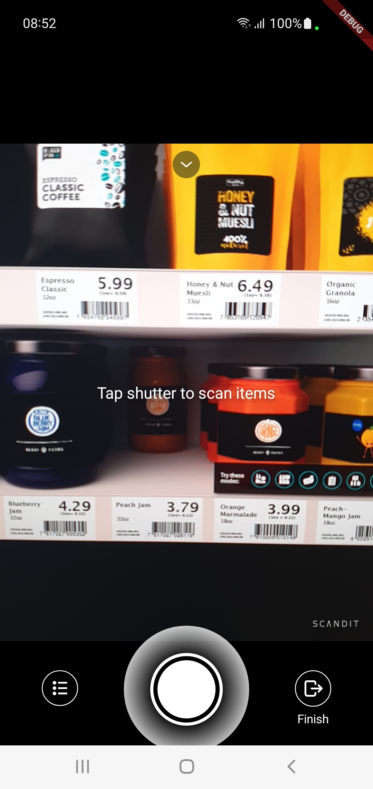

Run our Sample Apps
The best way to start working with the Scandit Data Capture SDK is to run one of our sample apps. In this guide we will go through the available apps and how to run them.
Available Samples
We have created both simple and advanced samples that show you how use various features of the Scandit Data Capture SDK. The simple samples allow you to get going quickly, while the advanced samples show you how to use additional settings and setup the scanner for the best user experience.
Here’s a list of our available samples on Flutter:
Run the Samples
Before you can run a sample app, you need to go through a few simple steps:
Sign in to your Scandit account and download the newest Flutter plugins at ssl.scandit.com/sdk. Unzip the archive and go to the samples folder.
Set the license key. To do this, sign in to your Scandit account and find your license key at ssl.scandit.com/licenses.
Once you have the license key, add it to the sample that you’d like to run:
// ./lib/main.dart const String licenseKey = '-- ENTER YOUR SCANDIT LICENSE KEY HERE --' // and use it later with DataCaptureContext.forLicenseKey(licenseKey)
Install the dependencies:
flutter pub get
Build and run the samples. We recommend running the samples on a physical device as otherwise, no camera is available.
flutter runNote
You probably need to setup signing for iOS. To do this, open the Xcode project and setup signing in the project settings. You can also run the sample from Xcode by clicking the Build & Run button.
Barcode Capture Samples
Basic sample that uses the camera to read a single barcode. |
Demonstrates the use of more advanced augmented reality use cases with the Scandit Data Capture SDK. |
Demonstrates how you can adapt the scanner settings best to your needs and experiment with all the options. |
Barcode Selection Samples
Basic sample that uses the Barcode Selection API. |
Demonstrates how you can adapt the barcode selection settings best to your needs and experiment with all the options. |
MatrixScan Samples

|
||
Very simple sample which shows how you can highlight barcodes on screen with the Scandit Data Capture SDK. |
Demonstrates the use of more advanced augmented reality use cases with the Scandit Data Capture SDK. |
Sample which shows how you can scan barcodes in batches and add them to an inventory list. |
ID Capture Samples
A basic ID Capture setup to scan front of ID Cards and barcodes from AAMVA documents. |
A more advanced ID Capture setup. |
Text Capture Samples
A basic Text Capture setup to recognize GS1 and LOT and integrate the parser. |
All our samples can be found in the archive that can be downloaded from our dashboard. Check the following section for more details.